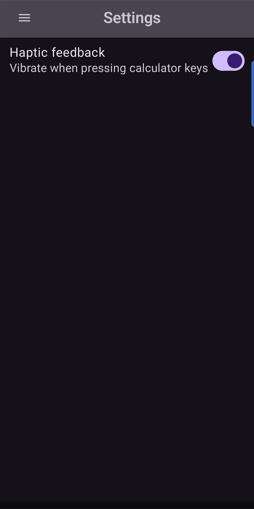
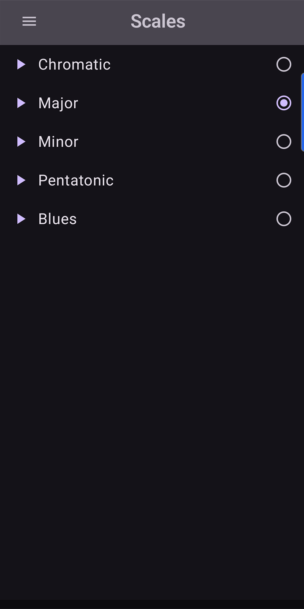
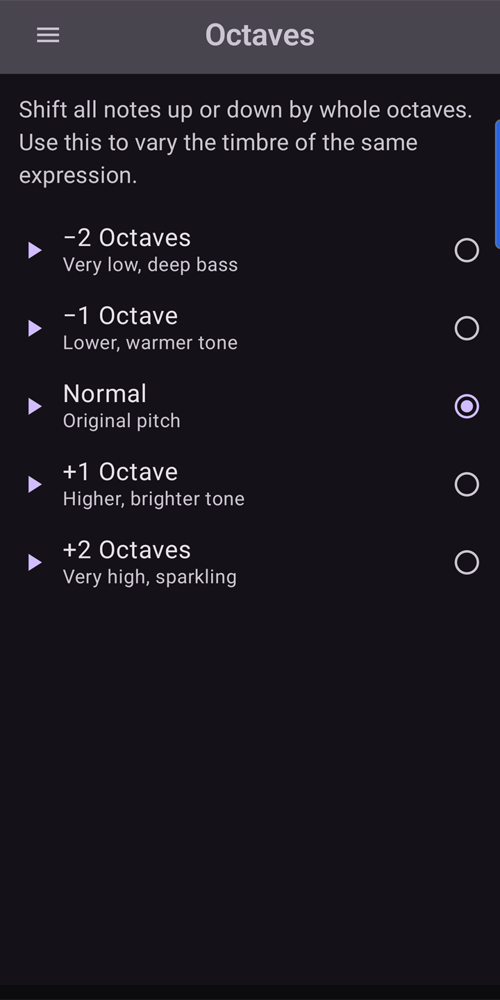
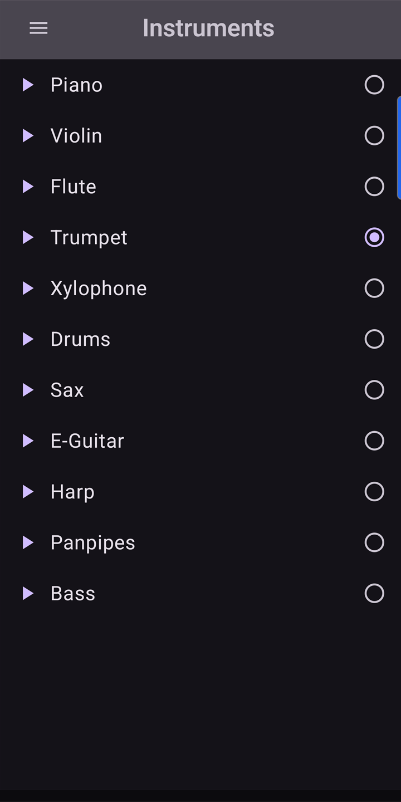
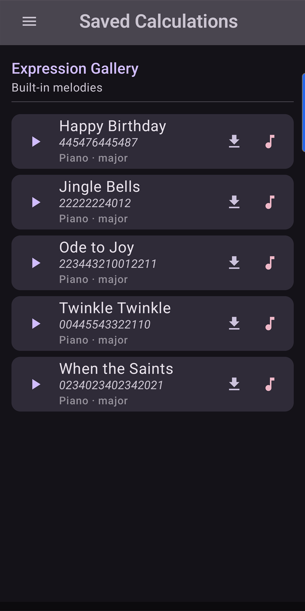

Math that makes music
Every digit, operator, and equals sign plays a unique musical note.
Type 1 + 2 = and hear a four-note melody before seeing
the result. A Big Calculator mode extends the
keypad to 24 notes (0–23) for a richer melodic range.
Six screens, all on-device: Calculator, Saved (replay your favourite calculations), Scales (the musical scale you compute in), Octaves (the octave range), Instruments (the synthesised timbre), and Settings.
Why SingingNumbers?
- 100% Offline — No internet connection needed. Ever.
- Zero Permissions — The manifest declares no Android permissions at all. We don't ask because we don't need.
- No Ads — Clean, distraction-free interface.
- Nothing Transmitted — No analytics SDK, no crash-reporting service, no data leaves your device.
- Free Forever — No subscriptions, no in-app purchases.
- Big Calculator — Extend the keypad to 24 notes (0–23) for a richer melodic range, with self-describing multi-digit notes like
[10]. - Pick Your Sound — Selectable musical scales, octave range, and instrument timbres on dedicated screens.
- Save Your Favourites — Saved Calculations screen lets you store, rename, and replay expressions you like.
- Low-Latency Audio — Native C++ engine built on Google Oboe (output only — no microphone).
- Accessibility — TalkBack content descriptions on every button, polite live-region announcements for results, full system font-scaling support, and a dark theme.
- Rated Teen (13+) on Google Play. Suitable for younger users (no data collection, no ads, no IAP) under parental discretion.
- Apache 2.0 License — Permissive license; recipients of the source may freely use, modify, and redistribute it.
Screenshots
Captured automatically from the live app via
capture-screenshots.ps1. Each thumbnail links to the
full-resolution Play-Store version (1440 × 2880).
{kind=link}



{kind=link}

{kind=link}

{kind=link}

{kind=link}


How it works
Each symbol maps to a musical note. The app synthesises tones in real time using pure arithmetic on PCM samples — no audio files are bundled. Low-latency output is delivered through a native C++ engine built on Google Oboe (output-only — the app never opens a microphone stream).
The table below shows the default scale. From the Scales screen you can pick alternative scales (major, minor, pentatonic, …); from the Instruments screen you can pick a different synthesised timbre. Both choices are remembered on the device and take effect on the next note the calculator plays.
| Symbol | Note | Frequency |
|---|---|---|
| 0 | C4 | 261.63 Hz |
| 1 | D4 | 293.66 Hz |
| 2 | E4 | 329.63 Hz |
| 3 | F4 | 349.23 Hz |
| 4 | G4 | 392.00 Hz |
| 5 | A4 | 440.00 Hz |
| 6 | B4 | 493.88 Hz |
| 7 | C5 | 523.25 Hz |
| 8 | D5 | 587.33 Hz |
| 9 | E5 | 659.25 Hz |
| + | F5 | 698.46 Hz |
| − | G5 | 783.99 Hz |
| × | A5 | 880.00 Hz |
| ÷ | B5 | 987.77 Hz |
| = | C6 | 1046.50 Hz |
| (negative sign) | A3 | 220.00 Hz |
Privacy
Nothing is sent off your device. The app has no internet permission, no analytics SDK, no crash-reporting service, and no ads. Your calculations stay on your device and are forgotten when you clear the display. Two small preferences (your chosen musical scale and instrument) are saved on the device only — never synced, never transmitted — and are removed when you uninstall.
Rated Teen (13+) on Google Play.
Requirements
- Android 8.0 (API 26) or newer; phones and tablets.
- A few megabytes of storage. The signed AAB is delivered to
your device by Google Play with only the native libraries for
your CPU architecture
(
arm64-v8a,armeabi-v7a,x86, orx86_64). - No special permissions. The app declares zero permissions in its manifest.
- Speakers, headphones, or a Bluetooth audio device for the audio feedback (the calculator works silently if your device is muted).